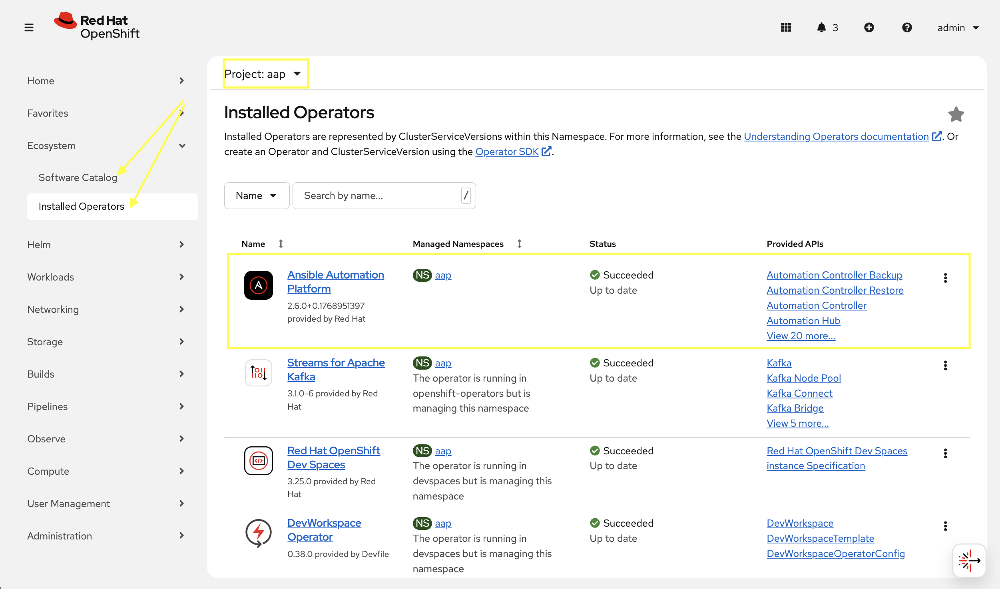
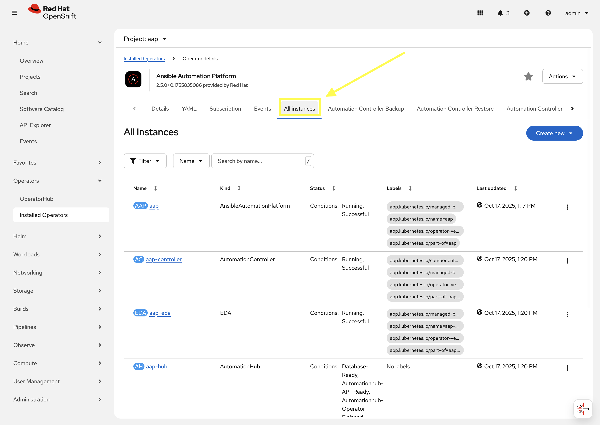
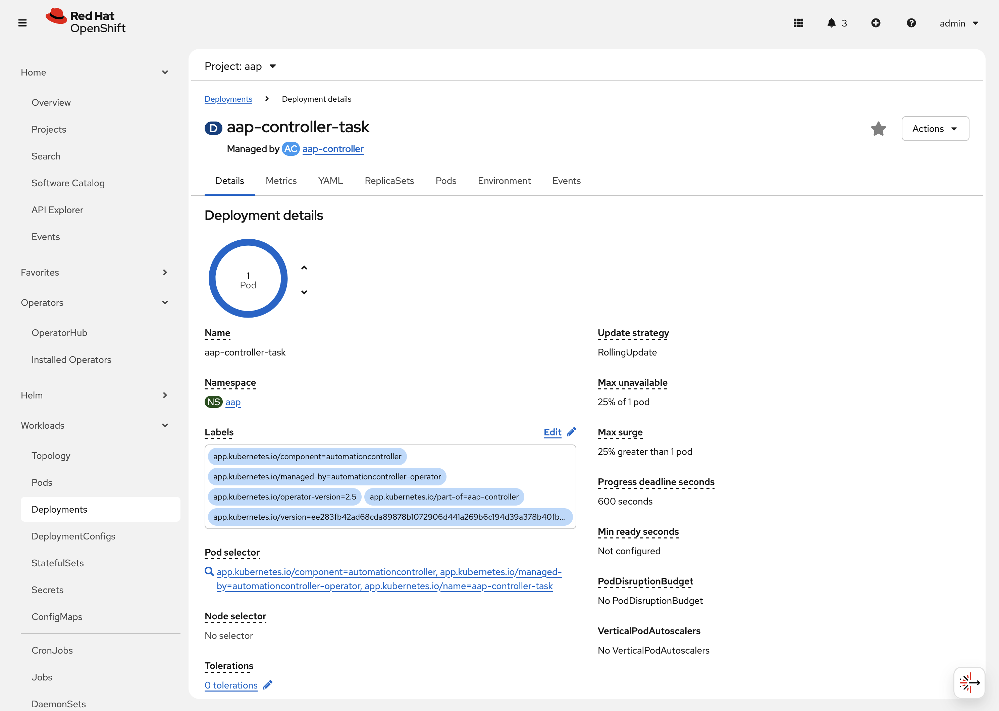
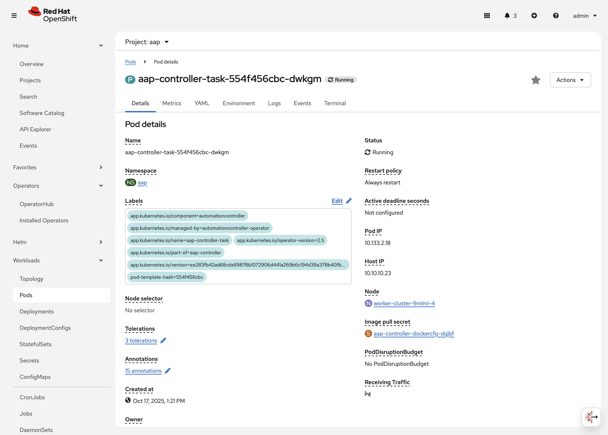
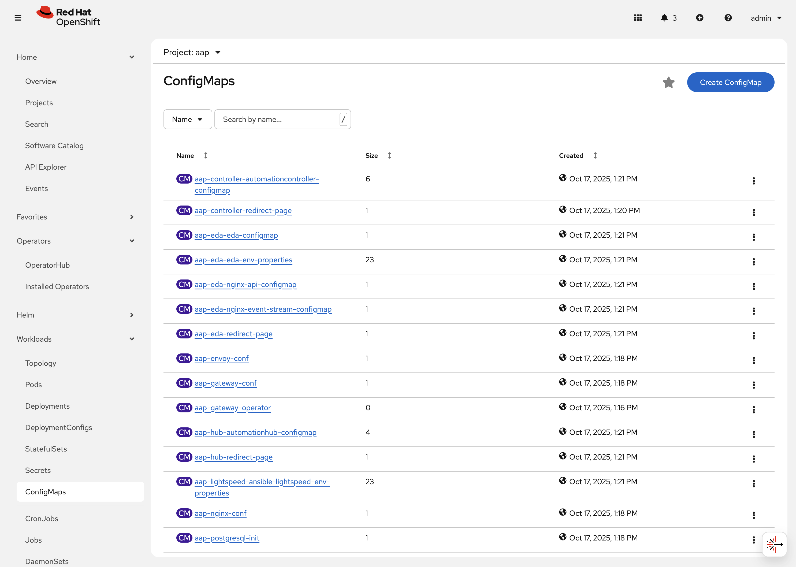
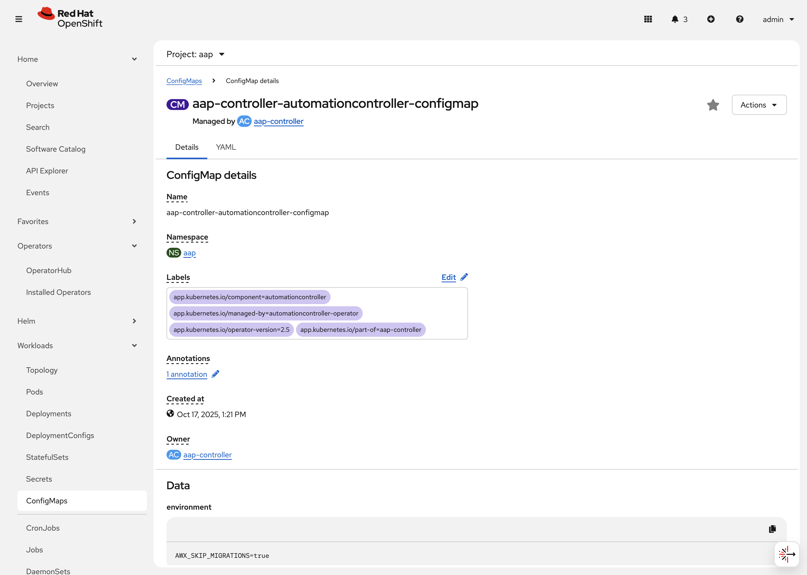
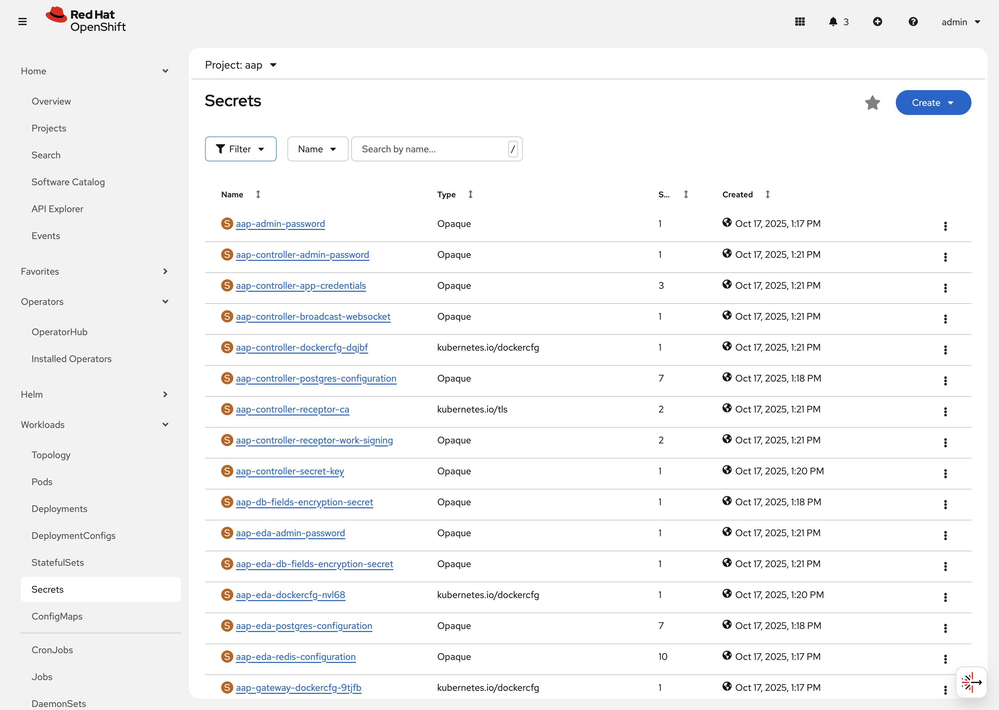
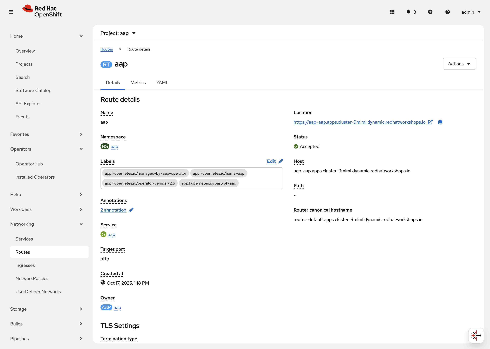

Viewing the AAP on OpenShift managed resources
The Ansible Automation Platform environment that you have been using thus far is running within your OpenShift cluster. Let’s click around the OpenShift Web Console and explore what’s already installed and configured by the operator.
2.1: The installed operator and CRDs
AAP has been installed in the aap Namespace using an Operator and the Operator Lifecycle Manager (OLM). The operator manages several Custom Resource Definitions (CRDs) that define the different components of Ansible Automation Platform.
-
Launch the OpenShift Web Console
-
Select the htpasswd_provider button and use the credentials provided in the Environment Details page to login to the OpenShift console.
-
Navigate to Ecosystem → Installed Operators
-
From the Project dropdown, ensure
aapis selected -
The
Ansible Automation Platformoperator is listed and installed within this project.
-
Click on the
Ansible Automation Platformoperator which will display all of the resources that are managed by the operator. -
In the top tab, click on
All Instances.
-
5 instances will be shown, each representing a Custom Resource Definitions (CRDs) managed by the AAP operator:
-
aapwhich is anAnsibleAutomationPlatformresources that relates to the Gateway component of AAP. -
aap-controllerwhich is anAnsibleControllerresource that relates to the Automation Controller component of AAP. -
aap-edawhich is anEDAthat relates to the Event-Driven Ansible component of AAP. -
aap-hubwhich is anAutomationHubresource that relates to the Automation Hub component of AAP. -
aap-lightspeedwhich is anAnsibleLightspeedresource that relates to the Ansible Lightspeed component of AAP.The AnsibleAutomationPlatformCRD deploys and manages the other CRDs listed above. This makes it simple to deploy all the components of AAP together. TheAnsibleAutomationPlatformCRD simply needs to be configured to let the operator know which components of the platform are desired, and how to deploy them, and the operator takes care of the details.
-
Click the aap instance to navigate to the Details page for the AnsibleAutomationPlatform CRD. On this page you can view some of the important resources managed by the AnsibleAutomationPlatform CRD. For instance, secrets, other CRDs, database configurations, etc.

Next to the Details tab click on YAML. This will show you the current YAML specification that defines the CRD. The following depicts the spec key in the YAML definition:
controller:
disabled: false
eda:
disabled: false
hub:
content:
replicas: 1
disabled: false
file_storage_access_mode: ReadWriteMany
file_storage_size: 100Gi
file_storage_storage_class: ocs-external-storagecluster-cephfs
gunicorn_api_workers: 1
gunicorn_content_workers: 1
worker:
replicas: 1
image_pull_policy: IfNotPresent
lightspeed:
disabled: false
no_log: true
redis_mode: standalone
route_tls_termination_mechanism: EdgeThis spec definition shows us that the controller, eda, and hub components are enabled (disabled: false) and some customizations made to the hub component specifically.
2.2: Resources managed by the CRDs
Each CRD manages its own set of OpenShift resources that are needed for the component to integrate into the final AAP deployment.
2.2.1: Deployments
Each CRD will create and manage a set of Deployment resources representing the key components of AAP.
-
Navigate to Workloads on the left hand navigation → Deployments. You will see a list of created deployments, their pod counts, and other information.

-
Click on aap-controller-task. Under the
Detailstab you can see information about the deployment resource such as its owner (Which CRD manages this deployment), associated containers, associated volumes, etc. Feel free to click on the other tabs to view information about the deployment and it’s associated metrics, YAML definition, pods, etc.

2.2.2: Pods
Many pods will be up and running that correlate to the containers running the application pieces of AAP. These pods are ultimately owned by the deployments viewed in the previous section.
-
Navigate to Workloads on the left hand navigation → Pods. You will see a long list of deployed pods and their status, restarts, etc.

-
Click on aap-controller-task-<id>. Under the
Detailstab you can see information related to this pod such as containers, volumes, conditions, etc.
-
Next to the
Detailstab, click on the Logs tab. Under theContainersdrop down, make sure that theaap-controller-taskcontainer is selected. Observe how you can view the application logs related to theawx.main.tasksportion of the application. This may be important for troubleshooting while the application is having trouble launching or managing tasks!
-
Under the
Containersdrop down, select the aap-controller-rsyslog container. Observe how you now see the logs pertaining to the logging of the application pod. If there are any issues with theawx-rsyslogdor external logging, you may see them here.
-
Next to the
Detailstab, click on the Terminal tab. Under theContainersdrop down, make sure that theaap-controller-taskcontainer is selected. You now have a direct terminal connection to the running container. Here you can view files, and interact with the running AWX application by running commands such asawx-manage. For example runawx-manage --help:sh-5.1$Check AWX Manage Commandsawx-manage --helpType 'awx-manage help <subcommand>' for help on a specific subcommand. Available subcommands: [auth] changepassword ...You could also get access to the container terminal using the ocCommand Line Interface viaoc rsh aap-controller-task-<id> -c aap-controller-taskas well.
Let’s do a similar exercise, but this time taking a look at the AAP web pods.
-
Navigate to Workloads on the left hand navigation → Pods.
-
Click on aap-controller-web-<id>
-
Next to the
Detailstab, click on the Logs tab. Under theContainersdrop down, make sure that theaap-controller-webcontainer is selected. Observe how you can view the application logs related to the AAP web API. This may be important for troubleshooting while the application is receiving web application requests. -
Next to the
Detailstab, click on the Terminal tab. Under theContainersdrop down, make sure that theaap-controller-webcontainer is selected. You now have a direct terminal connection to the running container. Just like in the task pod example before, here you can view files, and interact with the running AWX application by running commands such asawx-manage.
2.2.3: PersistentVolumeClaims
Some of the deployed components of the AAP operator may require persistent storage of data. Persistent Volume Claims (PVCs) are resources in OpenShift that enable access to persistent storage.
-
Navigate to Storage on the left hand navigation → PersistentVolumeClaims. Here you can view any PVCs and their status, associated PVs, capacity, etc.

-
Click on aap-hub-file-storage. Under the details tab you can see more information about the PVC such as its storageClass, capacity, used capacity, access mode, etc.

2.2.4: ConfigMaps
The AAP operator will create and manage ConfigMaps that are used by the application components for storing application settings.
Let’s view the ConfigMap that stores the nginx configuration used by the Automation Controller.
-
Navigate to Workloads on the left hand navigation → ConfigMaps. Here you can view all ConfigMaps and their size, etc.

-
Click on aap-controller-automationcontroller-configmap. Under
Detailswe can see information about the ConfigMap such as its owner and its data.
-
-
Under
Datatake a look at the different objects that belong to this particular ConfigMap. -
Look at the
nginx_confobject. this is the nginx configuration used for the Automation Controller application. -
Look at the
settingsobject, this is thesettings.pyfile for the Automation Controller application that is mounted at/etc/tower/settings.py.
The data for each ConfigMap is handled by the AAP operator. Any desired changes to these ConfigMaps should not be performed manually by editing the ConfigMaps. The operator may override any changes applied. If changes to the values of these ConfigMaps are desired, they should be applied by modifying the correct keys underneath the CRD spec.
|
2.2.5: Secrets
The AAP operator will create and manage sensitive values needed by the AAP application as Secrets. These can range from database configuration details, application login password, database encryption keys, application SSL certificates, and others.
For instance, when the AAP operator performs its initial deployment, by default. it will create a password for the admin user that can be used to login to the AAP platform once it’s fully deployed. Let’s take a look at it now.
-
Navigate to Workloads on the left hand navigation → Secrets. Here you can view any secrets and their type, size, etc.

-
Click on aap-admin-password. Under
Detailswe can see information about the secret and its data.
-
Under
Dataclick theReveal valuesbutton to show the hidden password. Go ahead and copy the password as it will be needed in the next section.
-
2.2.6: Routes
The AAP operator also handles creating the services needed for the application to route traffic internally among its components (Services), and the Routes needed for external access to the web application itself.
Let’s look at the routes that are created.
-
Navigate to Networking on the left hand navigation → Routes. Here you can view each created route and their status, location, etc.

-
Click on
aap. UnderDetailswe can see information about the route and it’s service, certificates, wildcard policies, etc. This route happens to belong to the Gateway component of the AAP Deployment. This is the resource where all API requests get routed through and also where we can access the UI from.
-
Under
DetailsandLocation, you can see the externally accessible URL which we can use to access the deployed Ansible Automation Platform instance. Click on the link which should look something like {aap_controller_web_url}. A new browser tab should open which will be a login page to AAP. For user type inadminand for the password paste the value copied from theaap-admin-passwordsecret in the previous section.
-
2.3: Operator manager pods
Another aspect of the AAP operator are the controller manager pods. These pods are deployed via Operator Lifecycle Manager.
The purpose of these pods is to automate the process of installing, updating, and managing operators and their associated operands within an OpenShift cluster.
These pods are installed when the operator is installed.
There are two deployment strategies when installing the AAP operator.
-
Cluster scoped installation.
-
Namespace scoped installation.
2.3.1: Cluster scoped installation
With a cluster scoped installation, one set of operator controller manager pods are installed into a specific namespace on the OpenShift cluster.
These sets of pods are responsible for managing one or more sets of AAP deployments in separate namespaces.
In essence, this single set of operator controller manager pods watches all the namespaces on the cluster for any of the AAP CRDs as described in previously.
The benefit of this approach is a single set of operator controller manager pods can manage many AAP deployments on a single cluster, thus less resources are consumed by the operator controller manager pods.
The downside is that each deployed instance of AAP on the OpenShift cluster must be on the same AAP version.
2.3.2: Namespace scoped installation
With a namespace scoped installation, one or more sets of operator controller manager pods are installed into specific namespaces on the OpenShift cluster.
Each set of pods is responsible for managing only one AAP deployment in the same namespace into which the operator is installed.
In essence, there can be as many deployments of the operator controller manager pods each watching and managing a single namespace on the cluster.
The benefit of this approach is that each set of operator controller manager pods can be on separate AAP versions and thus, every AAP deployment can be on a separate version and lifecycle.
The downside is that each set of operator controller manager pods consumes resources and ultimately, this approach will consume more total resources when deploying many AAP deployments on a single OpenShift cluster.
2.3.3: What operator strategy does this workshop use?
The OpenShift workshop environment provided in this lab utilizes namespace scoped operator installations of the AAP operator. This approach allows the student to deploy another working AAP operator onto the same cluster as viewed in the previous section without mixing resources.